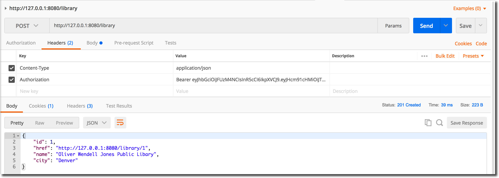
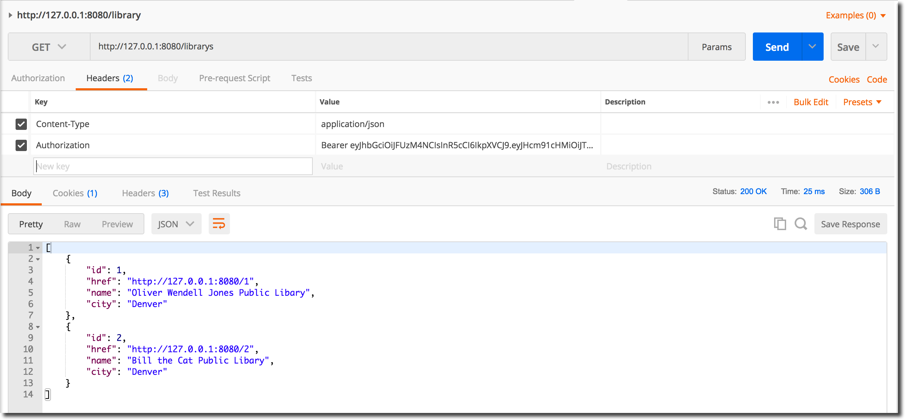
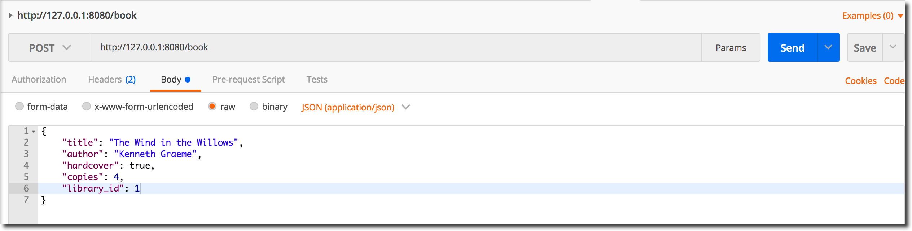
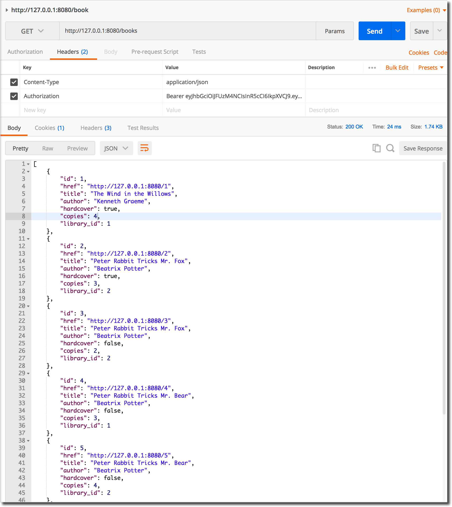

Jiffy with Docker and External PostgreSQL
Overview
We will create and deploy a sample application inside a Docker container. The containerized application will run as a single-instance and communicate with a Postgres database on the container-host's network. In this example the Postgres database will not be running in a container.
As in the Jiffy with Docker and SQLite tutorial, our Dockerfile will be quite simple and we will go with some of the docker build defaults. These include allowing docker build to determine the ipv4 address to assign to the image, and also using the default Docker networking setup (–network-bridge).
Note that this is a setup for testing and development only. When deploying a jiffy-application with Docker, you should use a container clustering/management solution (Docker Swarm, Kubernetes, Rancher …). Doing will simplify application scaling and is also necessary in order to support the peer-to-peer networking requirement.
Steps
- Verify the Jiffy installation.
- Generate a new application using a sample model file from the Jiffy source-tree.
- Edit the application's configuration file for Postgres and Docker use.
- Statically compile a binary for inclusion in the Docker image.
- Write a simple Dockerfile to create a runnable image.
- Write a small script to update the image's .dev.config.json file with the container's ipv4 address
- Create a container from the image and start the container.
- Test access to the application running in the container using Postman.
- Stop the container.
- Cleanup the Docker environment.
Verify Jiffy Installation
Ensure that Jiffy has been installed on your workstation by following the instructions provided in the Jiffy Installation section.
Generate the Application
We will generate a new application called pgelibraryapp from a model file that contains a ‘Library’ and ‘Book’ entity. Two relationships are maintained in the model; a Library hasMany Books and a Book belongsTo a specific Library. An application generated from this model will allow many Jiffy application features to be tested.
Open a terminal window on your workstation and run jiffy using the Library-Book model file to generate the source-code for our test application as follows:
jiffy -m $GOPATH/src/github.com/1414C/jiffy/support/testing_models/hasManyBelongsTo.json -p /exp/pgelibraryapp
Remember that jiffys -p flag expects to be provided with an existing path underneath your $GOPATH/src folder. In the example invocation shown above, jiffy will create the pgelibraryapp folder underneath $GOPATH/src/exp/ and then write the generated source-code to this location.
Execution of the generator (jiffy) should result in output similar to:
2018/06/22 12:26:57 generated: /Users/stevem/gowork/src/exp/pgelibraryapp/models/librarym.go
2018/06/22 12:26:57 generated: /Users/stevem/gowork/src/exp/pgelibraryapp/models/librarym_ext.go
2018/06/22 12:26:57 generated: /Users/stevem/gowork/src/exp/pgelibraryapp/controllers/libraryc.go
...
...
...
2018/06/22 12:26:59 executing /usr/local/go/bin/goimports -w /Users/stevem/gowork/src/exp/pgelibraryapp/util/strings.go
2018/06/22 12:26:59 executing /usr/local/go/bin/gofmt -w /Users/stevem/gowork/src/exp/pgelibraryapp/util/strings.go
2018/06/22 12:26:59 executing /usr/local/go/bin/goimports -w /Users/stevem/gowork/src/exp/pgelibraryapp/appobj/appconf.go
2018/06/22 12:26:59 executing /usr/local/go/bin/gofmt -w /Users/stevem/gowork/src/exp/pgelibraryapp/appobj/appconf.go
Your output may look slightly different, particularly the database connection test which will almost certainly fail. This is nothing to be concerned about, as the generator is attempting to connect to a local Postgres instance using bad credentials.
Edit the Application Configuration File
Update Address Keys
The next step is to edit the generated application's configuration files. Docker allocates a static ip-address for each container by default, and we will use that address in our application's configuration file. ‘external_address’ refers to the address at which the application's end-points will be available, while the ‘internal_address’ is used for cache updates and interprocess communication over web-socket connections. Strictly speaking, in a single-instance Docker deployment we could get away with maintaining the address-keys as follows:
.dev.config.json
{
"external_address": ":8080",
"internal_address": ":4444",
"env": "dev",
...
...
}
However, we will show how to obtain and insert the container's real ip-address into the configuration file. This will be useful later if you deploy multiple application instances in Docker containers.
Open the generated .dev.config.json file in an editor and update the ‘external_address’ and ‘internal_address’ values with “xxx.xxx.xxx.xxx:8080” and “xxx.xxx.xxx.xxx:4444” respectively. Using an illegal ipv4 address as a placeholder/mask ensures that the container will not start in the event that the container's address could not be assigned to the config keys. When you have finished, save the file after verifying that it looks like this:
.dev.config.json
{
"external_address": "xxx.xxx.xxx.xxx:8080",
"internal_address": "xxx.xxx.xxx.xxx:4444",
"env": "dev",
...
...
}
Update the Application's Database Config
Jiffy generates configuration files targeting a Postgres database by default. Maintain the values in the ‘database’ block of the *.dev.config.json; file as necessary in order to gain access to your testing database:
.dev.config.json
{
...
"database": {
"db_dialect": "postgres",
"host": "192.168.1.65",
"port": 5432,
"usr": "godev",
"password": "gogogo123",
"name": "glrestgen"
},
...
}
Once the database block in .dev.config.json has been updated, save the file and close the editor.
Ensure PostgreSQL is Available
By default, Postgres only allows connections from the localhost (127.0.0.1). If your Postgres database is running on another machine, you will need to ensure that it allows connections from remote hosts. A quick web-search will reveal how to maintain Postgres's postgresql.conf and pg_hba.conf files to allow remote connections to the database. Make sure that you are able to connect to your Postgres database from the Docker host environment before continuing.
Update the Application's Group Leader KVS Config
Jiffy generates configuration files supporting a stand-alone / local group-leadership KVS by default. Examine the ‘group_leader_kvs’ block in *.config.json to ensure the ‘local_standalone’ KVS option is active as shown below:
.dev.config.json
{
...
"group_leader_kvs": {
"local_standalone": {
"active": true,
"internal_address": "127.0.0.1:4444"
},
"redis": {
"active": false,
"max_idle": 80,
"max_active": 12000,
"redis_protocol": "tcp",
"redis_address": "127.0.0.1:6379"
},
"memcached": {
"active": false,
"memcached_addresses": [
"192.168.112.50:11211"
]
},
"sluggo": {
"active": false,
"sluggo_address": "127.0.0.1:7070"
}
},
...
}
Build a Static Application Binary for Alpine Linux
Next, we need to build a static application binary for linux/amd64. To build the application, a number of dependencies are required as outlined in the Jiffy Dependencies section of the documentation. Check that your build environment contains the correct packages and import any that are missing.
This tutorial uses the popular Alpine Linux distribution as the basis for the new container image. Alpine Linux is a small and sparse distribution making it nice for use with containers. There are a few things to be aware of however…
Alpine Linux is based on lib-musl which means that binaries built by go build where the source makes use of cgo must target lib-musl rather than lib-gcc. The binary resulting from the typical ‘GOOS=linux GOARCH=amd64 go build -o main .’ command would almost certainly not work on Alpine. The good news is that it is quite easy to build with musl-gcc, the bad news is that musl-gcc is available for Linux only. If you are working on a system in which lib-musl is not supported, you will need to run the go build command in a supported build environment. Most Linux distributions and architectures are supported.
Check if lib-musl has been installed in the build environment by running the which command:
which musl-gcc
If musl-gcc was found in the $PATH, which will return output similar to:
/usr/bin/musl-gcc
If musl-gcc was not found, follow the installation instructions below to download and install the required packages.
Install Musl-gcc
We will go over how to install musl-gcc on a Debian system, but the steps are largely the same for any Linux distribution. Use your distribution's package manager to install the musl lib, musl development files and musl development tools. Run the following commands (or their equivalents) in a terminal window on your Linux build system:
sudo apt-get update
sudo apt-get install musl
sudo apt-get install musl-dev
sudo apt-get install musl-tools
Check to make sure that musl-gcc is now in the $PATH:
which musl-gcc
Build a Static Application Binary
After ensuring that all of the required dependencies have been installed in the build environment, run the following command to build a statically-linked binary called main for the Alpine Linux target OS. Setting the CC environment variable to point at musl-gcc ensures that the target (executable) will run in the Alpine Linux environment. Adjust the GOARCH environment variable as necessary:
CGO=0 GOOS=linux GOARCH=amd64 CC=$(which musl-gcc) go build --ldflags '-w -linkmode external -extldflags "-static"' -a -tags netgo -installsuffix cgo -o main .
Running go build with CGO=0 and setting the -a flag forces a rebuild without cross-compilation dependencies. Setting –ldflags as shown instructs go build to produce a statically linked binary. Setting the CC environment variable to point at musl-gcc ensures that the target (executable) will run in the Alpine Linux environment. Once the build has completed, a new ‘main’ file will have been created. Check the file via the file command:
file main
You should see output similar to:
main: ELF 64-bit LSB executable, x86-64, version 1 (SYSV), statically linked, not stripped
Build a Dynamically-Linked Application Binary
This is optional and will produce a marginally smaller binary. We will not use a dynamically-linked binary in our image, but have included a suitable go build command for reference purposes.
CGO=0 GOOS=linux GOARCH=amd64 CC=$(which musl-gcc) go build -a -tags netgo -installsuffix cgo -o main .
Running go build with CGO=0 and setting the -a flag forces a rebuild without cross-compilation dependencies. go build produces dynamically-linked binaries by default, so no linker instructions have been provided. Setting the CC environment variable to point at musl-gcc ensures that the target (executable) will run in the Alpine Linux environment. Once the build has completed, a new ‘main’ file will have been created. Check the file via the file command:
file main
You should see output similar to:
main: ELF 64-bit LSB executable, x86-64, version 1 (SYSV), dynamically linked, interpreter /lib/ld-musl-x86_64.so.1, not stripped
Create a Dockerfile
Verify that you have Docker installed in your build environment. The easiest way to do this is to run which docker in a terminal window to ensure the docker application is in the $PATH. If there is no response, check the $PATH or install Docker following the instructions at www.docker.com. Verify that the Docker daemon is running by opening a terminal window in your build environment and running the docker ps command. If Docker is not running, an error message will be displayed. Start the Docker daemon before continuing.
In order to deploy the compiled application in a Docker container, we need to create a Dockerfile. The docker build command uses the Dockerfile as a set of instructions when building an image. As mentioned previously, we will use Alpine Linux as the foundation (base image) for the new Docker container image. Dockerhub has a number of pre-defined images that are available to be ‘pulled’ into locally defined custom images.
Create a new file called Dockerfile in the root folder of the libappmulti source-tree and open it in your editor. Copy the following content into the new Dockerfile. An effort has been made to briefly describe what each line of the Dockerfile is used for.
# use the official docker hub alpine:latest base image
FROM alpine:latest
# set the maintainer information for the new image
LABEL maintainer="<stevem@1414c.io>"
# add the compiled application binary to the root folder of the new image
ADD main ./
# copy the configuration file to the root folder of the new image
COPY .dev.config.json .
# add the entrypoint.sh shell script to the root folder of the new image
ADD docker-entrypoint.sh .
# set widely exectuable permission on the shell-script
RUN /bin/chmod 777 docker-entrypoint.sh
# create a directory in the root folder of the new image to hold the jwt signing keys
RUN mkdir jwtkeys
# copy the jwtkeys folder content into the image's /jwtkeys folder
COPY jwtkeys ./jwtkeys
# set container environment variable $PORT to 8080
ENV PORT 8080
# container will listen on port tcp/8080
EXPOSE 8080
# install sqlite3 into the image
RUN apk update \
&& apk add sqlite \
&& apk add socat
# add unix file command
RUN apk add file
# create a test.db file in the root folder (don't really need to do this,
# but it is a nice test when getting started)
RUN /usr/bin/sqlite3 /test.db
# set the container entrypoint - container executes this once it is up and running
ENTRYPOINT ["/docker-entrypoint.sh"]
# specify the flag(s) to be used with the ENTRYPOINT
CMD ["-dev"]
Create the Entrypoint Script
In a previous step .dev.config.json was updated with xxx.xxx.xxx.xxx ipv4 address masks. In order to replace the masks with the container's ipv4 address, docker run and docker start will execute the docker-entrypoint.sh when running a container instance based on the image definition. At the moment this is a problem however, as we have not written the script yet. Create a new file called docker-entrypoint.sh in the root folder of the pgelibraryapp source-tree and open it in your editor. Copy the following content into the new docker-entrypoint.sh file:
#!/bin/sh
# get the ipv4 address assigned to eth0
replace=$(ifconfig eth0 | grep "inet addr" | cut -d ':' -f 2 | cut -d ' ' -f 1)
# set a variable with the value we are planning to replace
search="xxx.xxx.xxx.xxx"
# check that variable replace has something in it
if [ -z "$replace" ]; then
echo "Did not get an address value for eth0"
elif [ -n "$replace" ]; then
echo "${replace} found"
# replace all instances of 'xxx.xxx.xxx.xxx' in .dev.config.json
# with the ipv4 address in the ${replace} variable
sed -i "s/${search}/${replace}/g" .dev.config.json
exec /main "$@"
fi
Note that the docker-entrypoint.sh script assumes the ipv4 address should be read from the eth0 interface. This may not be the case in more complex deployments.
Build the Image
Assuming the previous steps have been successful, it is now time to build the new Docker image. Execute the following command from the pgelibraryapp root folder:
docker build -t pgelibraryapp .
Running docker build as shown instructs Docker to construct an image called pgelibraryapp using the Dockerfile in the current working directory. You should see output similar to:
Sending build context to Docker daemon 14.4MB
Step 1/17 : FROM alpine:3.7
---> 3fd9065eaf02
Step 2/17 : LABEL maintainer="<stevem@1414c.io>"
---> Running in bf4ee48b2816
Removing intermediate container bf4ee48b2816
---> f6450f88abb9
Step 3/17 : ADD main ./
---> 0339472c223a
Step 4/17 : COPY .dev.config.json .
---> ea4d0e22dda8
Step 5/17 : ADD docker-entrypoint.sh .
---> 3a091afcc4e6
Step 6/17 : RUN /bin/chmod 777 docker-entrypoint.sh
---> Running in 02bc2611f675
Removing intermediate container 02bc2611f675
---> 82b131becf0a
Step 7/17 : RUN mkdir jwtkeys
---> Running in 5dc37bbb6d90
Removing intermediate container 5dc37bbb6d90
---> ce27be862527
Step 8/17 : COPY jwtkeys ./jwtkeys
---> fad638ee093f
Step 9/17 : ENV PORT 8080
---> Running in ebf5a4645a24
Removing intermediate container ebf5a4645a24
---> f73fa9102cca
Step 10/17 : EXPOSE 8080
---> Running in 8ec67da3a90f
Removing intermediate container 8ec67da3a90f
---> d943968d2257
Step 11/17 : RUN apk update
---> Running in 4f036d66ca8e
fetch http://dl-cdn.alpinelinux.org/alpine/v3.7/main/x86_64/APKINDEX.tar.gz
fetch http://dl-cdn.alpinelinux.org/alpine/v3.7/community/x86_64/APKINDEX.tar.gz
v3.7.0-215-g16971064c0 [http://dl-cdn.alpinelinux.org/alpine/v3.7/main]
v3.7.0-207-gac61833f9b [http://dl-cdn.alpinelinux.org/alpine/v3.7/community]
OK: 9054 distinct packages available
Removing intermediate container 4f036d66ca8e
---> 15aef1a3a835
Step 12/17 : RUN apk add file
---> Running in 7444e203db73
(1/2) Installing libmagic (5.32-r0)
(2/2) Installing file (5.32-r0)
Executing busybox-1.27.2-r7.trigger
OK: 9 MiB in 13 packages
Removing intermediate container 7444e203db73
---> 92bf177f86b7
Step 13/17 : RUN apk add busybox-extras
---> Running in 662591e9e2bd
(1/1) Installing busybox-extras (1.27.2-r11)
Executing busybox-extras-1.27.2-r11.post-install
Executing busybox-1.27.2-r7.trigger
OK: 9 MiB in 14 packages
Removing intermediate container 662591e9e2bd
---> 80ab4f590c82
Step 14/17 : RUN apk add openssh-client
---> Running in 5baaa52529ab
(1/2) Installing openssh-keygen (7.5_p1-r8)
(2/2) Installing openssh-client (7.5_p1-r8)
Executing busybox-1.27.2-r7.trigger
OK: 12 MiB in 16 packages
Removing intermediate container 5baaa52529ab
---> 8d1b14444e72
Step 15/17 : RUN apk add postgresql-client
---> Running in 2a3edc09549a
(1/9) Installing ncurses-terminfo-base (6.0_p20171125-r0)
(2/9) Installing ncurses-terminfo (6.0_p20171125-r0)
(3/9) Installing ncurses-libs (6.0_p20171125-r0)
(4/9) Installing libedit (20170329.3.1-r3)
(5/9) Installing db (5.3.28-r0)
(6/9) Installing libsasl (2.1.26-r11)
(7/9) Installing libldap (2.4.45-r3)
(8/9) Installing libpq (10.4-r0)
(9/9) Installing postgresql-client (10.4-r0)
Executing busybox-1.27.2-r7.trigger
OK: 24 MiB in 25 packages
Removing intermediate container 2a3edc09549a
---> 9d5c92cc037f
Step 16/17 : ENTRYPOINT ["/docker-entrypoint.sh"]
---> Running in 499c637488e1
Removing intermediate container 499c637488e1
---> 6b4c3914a599
Step 17/17 : CMD ["-dev"]
---> Running in 401321fde538
Removing intermediate container 401321fde538
---> 32045cc2b080
Successfully built 32045cc2b080
Successfully tagged pgelibraryapp:latest
Aardvark:pgelibraryapp stevem$
View the Image
You can run the docker image command to view some basic data regarding the new image:
docker image ls pgelib*
You should see output similar to:
REPOSITORY TAG IMAGE ID CREATED SIZE
pgelibraryapp latest 32045cc2b080 About a minute ago 35MB
Use the Image
Once the image has been created, the next step is to use it to create a container. This can be done in a single step where Docker creates the container and then starts it. Run the following command to create and start a new container from the pgelibraryapp image:
docker run --name pgelibraryapp -p 8080:8080 -d pgelibraryapp
If all went well, docker created a container from the pgelibraryapp image and then started it. The flags provided with the docker run command do the following:
- –name - the image to use
- -p - used to bind the host's tcp/8080 port to container port tcp/8080
- -d - detach the container from the terminal session
Check the Container Status
Container status can be checked via the docker ps command:
docker ps -a
You should see output similar to:
CONTAINER ID IMAGE COMMAND CREATED STATUS PORTS NAMES
e04bbd64dfba pgelibraryapp "/main -dev" 3 seconds ago Up 3 seconds 0.0.0.0:8080->8080/tcp pgelibraryapp
The output of the command shows that the pgelibraryapp container was started with entrypoint ‘/main -dev’ and that container port :8080 is mapped to host port :8080.
SSH into the Container
We can ssh into the running container to see what is going on using the command shown in the following terminal session. The command logs in as root using the specified interactive shell (in this case /bin/sh). Check that ‘main -dev’ is running as expected using the Linux ps command.
docker exec -it pgelibraryapp /bin/sh
/ # ps -ef
PID USER TIME COMMAND
1 root 0:00 /main -dev
12 root 0:00 /bin/sh
19 root 0:00 ps -ef
/ #
Take a look around the in the container environment and verify that the content of .dev.config.json has been updated with the correct ip-address using the ifconfig/cat commands. Remember that the docker container is created with a static ipv4 address assigned to the eth0 interface. Verify that the eth0 ipv4 address has been added to the ‘external_address’ and ‘internal_address’ keys in .dev.config.json.
/ # ifconfig
eth0 Link encap:Ethernet HWaddr 02:42:AC:11:00:02
inet addr:172.17.0.2 Bcast:172.17.255.255 Mask:255.255.0.0
UP BROADCAST RUNNING MULTICAST MTU:1500 Metric:1
RX packets:401 errors:0 dropped:0 overruns:0 frame:0
TX packets:275 errors:0 dropped:0 overruns:0 carrier:0
collisions:0 txqueuelen:0
RX bytes:61539 (60.0 KiB) TX bytes:26368 (25.7 KiB)
lo Link encap:Local Loopback
inet addr:127.0.0.1 Mask:255.0.0.0
UP LOOPBACK RUNNING MTU:65536 Metric:1
RX packets:401 errors:0 dropped:0 overruns:0 frame:0
TX packets:401 errors:0 dropped:0 overruns:0 carrier:0
collisions:0 txqueuelen:1
RX bytes:70197 (68.5 KiB) TX bytes:70197 (68.5 KiB)
/ # cat .dev.config.json
{
"external_address": "172.17.0.2:8080",
"internal_address": "172.17.0.2:4444",
"env": "dev",
...
...
...
"service_name": "Book",
"service_active": true
}
]
}/ #
Use the psql Client to Connect to Postgres
We installed the Postgres client package into the pgelibraryapp image by including it in our Dockerfile. Make sure that the pgelibraryapp container is running and that you have logged in via the docker exec -it pgelibraryapp /bin/sh command. Try to connect to your Postgres database as follows:
/ # psql -h 192.168.1.65 -d postgres -U postgres
Password for user postgres: *******************
psql (10.4, server 9.5.3)
Type "help" for help.
postgres=#
Connecting to the database using psql is just for demonstration purposes. If the database was not reachable the container would not have started. For a discussion of what to do if the container entrypoint fails, see the Troubleshooting section of this document.
Login to the Application
Launch Postman or your favorite RESTful service testing tool and specify a target URL of: http://172.17.0.2:8080/usr/login making sure to select the http POST method. Maintain the request body to provide a user-id and password as shown in the following JSON snippet. Typically the user-id for a jiffy application is an email address, but an exception is made for the default administration user definition.
{
"email": "admin",
"password": "initpass"
}
When you have finished and your Postman (or other test utility) looks like the following image, click the ‘Send’ button to post your login request to the running application.

If all goes well, you will get a http response code of 200 (status ok), and a block of JSON with a single 'token' tag containing a jumble of letters and numbers. This is the JWT that will be used to validate the 'admin' user's authorization to access the 'Library' and 'Book' entity service end-points. If you want to read more about JWT's, [jwt.io](https://jwt.io) is a good place to start, or you can refer to the [Access Control](/jiffy/accesscontrol/index.html) section of this document set. 
Create a Library
We will create a new ‘Library’ entity. Configure your test-tool to POST to the ‘library’ service as shown in the following image:

Copy the JWT from the login session and paste it into the new POST request's Authorization header field as shown below and then submit the request to the application.

Following submission, a new ‘Library’ entity should have been created:

Create another ‘Library’ entity using the ‘Create a Library’ steps and then request a list of Library entities using the GET ../librarys end-point:

Create a Book
Next, we will create a ‘Book’ entity and allocate it to ‘Library’ 1. Configure your test-tool to POST to the ‘book’ service as shown in the following image:

Following the submission, a new ‘Book’ entity should have been created:

Create a few more ‘Book’ entities using the ‘Create a Book’ steps and allocate them to your ‘Library’ entities. When you have finished, request a list of ‘Book’ entities using the GET ../books end-point:

Library toBooks
Based on the ‘hasMany’ relationship between the ‘Library’ and ‘Book’ entity's, we can get the number of ‘Book’ entities belonging to ‘Library’ 1 as follows:

Remove the $count suffix from the URL to get the complete list of Book entities belonging to ‘Library’ 1:

Book toLibrary
A reciprocal ‘belongsTo’ relationship exists between the ‘Book’ and ‘Library’ entity definitions. Select a ‘Book’ entity and verify that the ‘belongsTo’ relationship works as expected:

Check the list of filters and commands along with the Library and Book models to see what can be appended to the the service end-points. Try some things out.